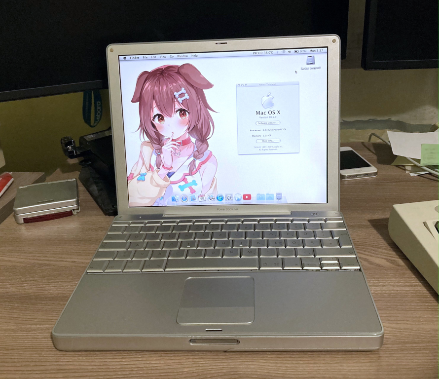

|  | CPU: 1.33 GHz PowerPC G4 7447AMemory: 1.25 GBStorage: 120 GB SSDGPU: NVidia GeForce FX Go5200 with 64 MB of VRAMOS: Mac OS Sorbet Leopard + Void LinuxCondition: Working perfectly |
I was on the lookout for a 12" PowerBook for a long time and finally found this one. It is in amazing cosmetic condition but two keys on the keyboard are missing. Probably because the previous owner tried to disassemble it. Other than that the keyboard feels really nice, better than my other PowerBooks. It's more tactile and less mushy.
After getting a second 12" PowerBook and realising that one had issues with the PATA controller, I decided to upgrade this one instead and maxed out the RAM and installed an mSATA SSD. The original battery lasts around 4-5 hours and after repasting it (because it was overheating), it works perfectly! It's an amazing little machine that still kicks today.
Side note: I performed a test using both thermal pads and thermal paste on the CPU and got an identical result with each one so if you're thinking of replacing the original solution, you can go with either


{kind=link}
{kind=link}